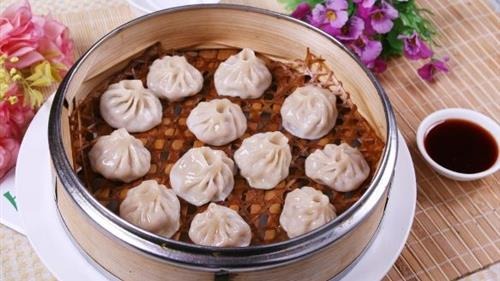
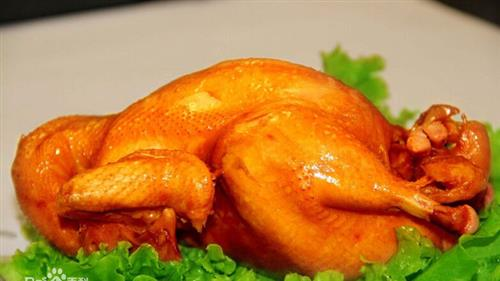
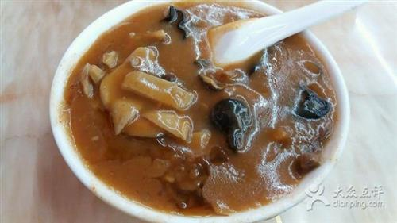
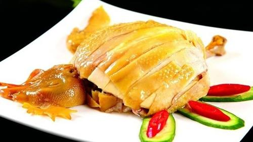
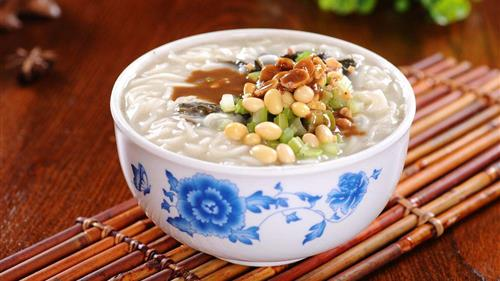
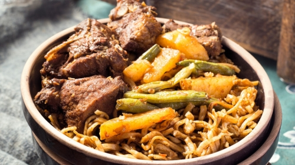
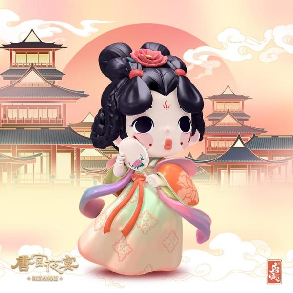

Chef's PickHenan cuisine, also known as Yu cuisine, is one of China's eight great culinary traditions. Rooted in the agricultural abundance of the Central Plains, it emphasizes fresh ingredients, refined techniques, and balanced flavors. The cooking style is known for its mild yet savory taste, featuring a perfect harmony of sour, sweet, bitter, spicy, and salty elements.
With a history of over 3,000 years, Henan's culinary heritage has been shaped by its role as a political and cultural center for countless dynasties. Royal banquets from the Song Dynasty, temple vegetarian dishes from Shaolin, and hearty peasant fare from the countryside all contribute to the diverse and rich food culture found throughout the province today.





A beloved Henan specialty with centuries of history. Fresh hand-made noodles are layered over a savory mixture of braised pork, green beans, bean sprouts, and seasonal vegetables, then slow-cooked until the flavors meld together perfectly. The result is a fragrant, satisfying dish where every strand of noodle absorbs the rich essence of the ingredients below.
Originating from the Tang Dynasty, this legendary feast consists of 24 dishes served in a specific sequence, with each course featuring a soup-based dish. Named for the way dishes are served one after another like flowing water, the banquet includes famous items like Peony Swallow Soup, Lotus Root Soup, and the signature Golden Soup with Cabbage Hearts. It has been served to emperors and dignitaries for over 1,300 years.
The quintessential Henan breakfast staple that warms the soul on chilly mornings. This thick, peppery soup is made with beef or mutton broth, loaded with gluten strips, kelp, vermicelli, daylily, wood ear mushrooms, and peanuts. The bold pepper flavor combined with the comforting, hearty texture makes it the perfect way to start any day. Locals pair it with crispy fried dough sticks or flatbreads.
Renowned throughout China for their delicate craftsmanship, these soup-filled dumplings are a Kaifeng specialty. Each dumpling is carefully folded with paper-thin wrappers and filled with savory pork and rich gelatin that melts into a piping hot soup during steaming. Skilled chefs can fold the wrappers into various artistic shapes, making them as beautiful as they are delicious. One bite releases an explosion of flavorful broth.
A Henan adaptation of the famous Song Dynasty dish attributed to the celebrated poet Su Dongpo. Premium pork belly is slow-braised in a clear broth until the meat becomes meltingly tender while maintaining its shape. The dish is served in a delicate clear soup that captures all the natural flavors of the pork without heavy seasoning. It represents the refined aesthetic of Henan's culinary philosophy.

A quintessential Kaifeng dish where thick wheat noodles are simmered directly in a rich, aromatic broth made from lamb or beef bones. The noodles absorb the deep flavors of the slow-simmered stock, creating a dish that is both comforting and intensely satisfying. Topped with tender braised meat, fresh vegetables, and aromatic herbs, it has been a beloved local specialty for generations.